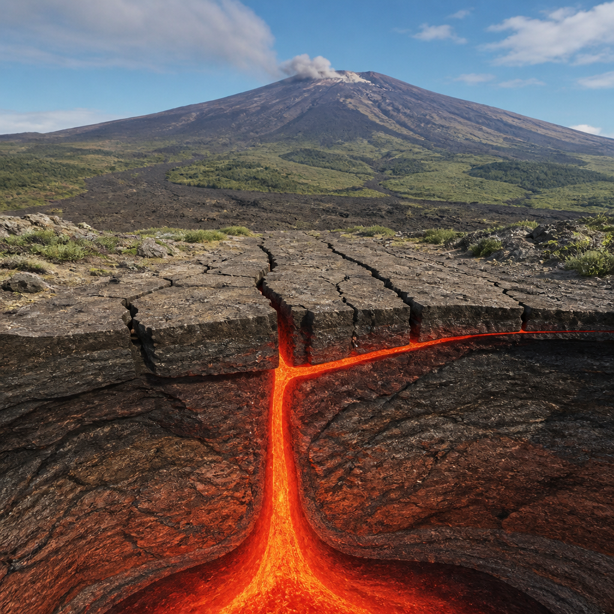
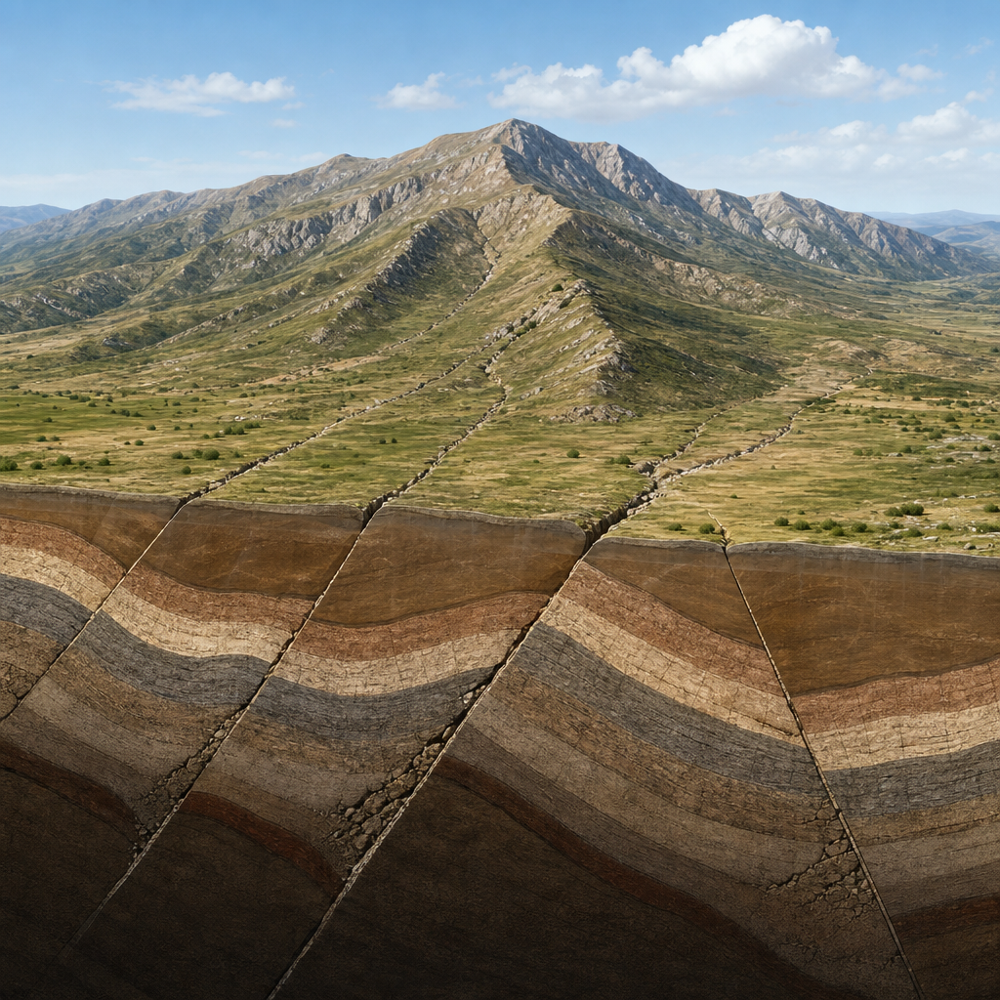
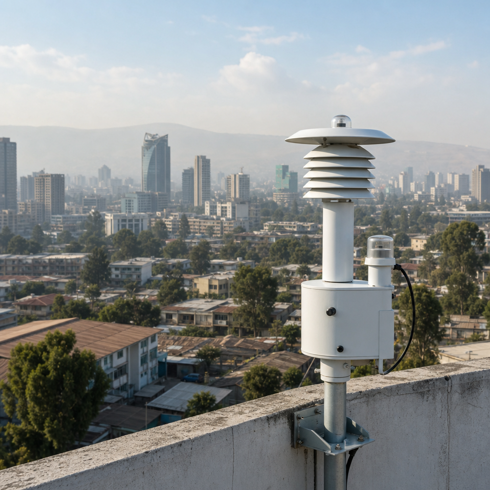
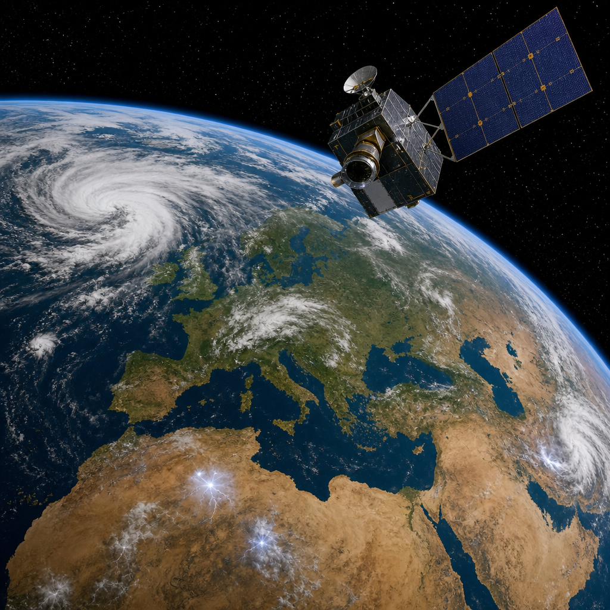
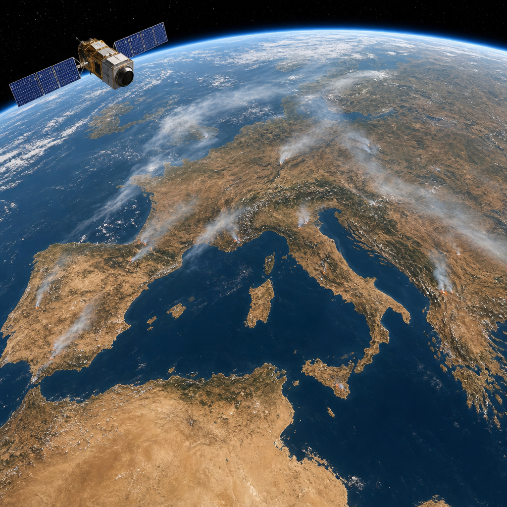

◉
Meteo Radaril blog

I pinguini imperatore cambiano sito di riproduzione quando il ghiaccio si rompeClima · 4 min · NASA Science

Sentinel-3 accelera l’arrivo dei dati sugli incendi in EuropaSpazio · 3 min · ESA Observing the Earth

Etna, l’intrusione del 2008 che ha mostrato l’arresto di un dicco magmaticoVulcani · 4 min · INGV Vulcani

Dieci anni dalla sequenza del 2016: le lezioni della scienza sui terremoti dell’Appennino centraleTerremoti · 6 min · INGV Terremoti

Campi Flegrei, lo sciame del 31 luglio visto con oltre mille terremotiVulcani · 5 min · INGV Vulcani

Un sensore sul tetto osserva il particolato fine ad Addis AbabaAria · 2 min · NASA Science

MTG-I2 completa la costellazione per le immagini meteo sull’EuropaSpazio · 2 min · ESA Observing the Earth

Caldo estremo, siccità e incendi: il monitoraggio dallo spazio nel 2026Clima · 4 min · ESA Observing the Earth